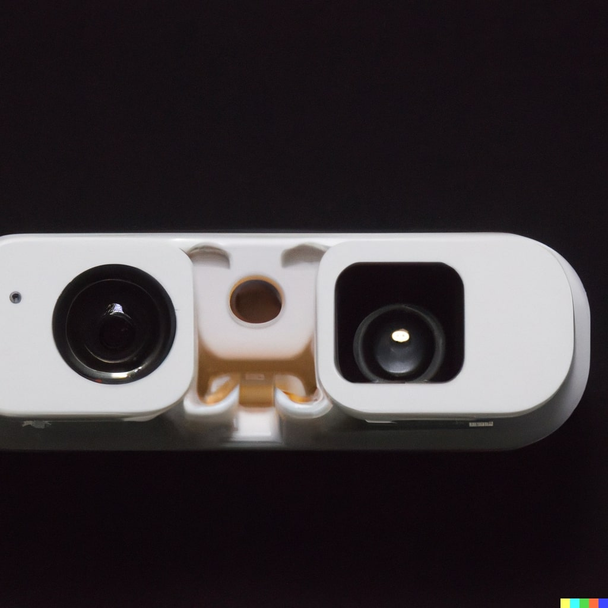

DerAIVE Technologies - Intraoral Scanner
Our intraoral scanner is a module that fits on your smartphone, allowing you to take high-quality images of your teeth from the comfort of your own home.
Features
- Fits on any smartphone
- High-quality images
- Easy to use